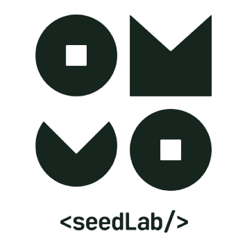

选择行动
从学习、社团、打工、休息或气候行动中安排本周行动。
FILE 07 / CARD GAME DESIGN · PROJECT DECK
一款以校园日常为场景的卡牌策略游戏方案。玩家在有限行动里安排学习、社交、休息与绿色行动，让每次选择同时影响个人状态和周围的人。
← 返回
seedLab西安欧亚学院独立游戏策划案：
01 / GAME OVERVIEW
项目将气候变化、性别平等和青年参与放进普通大学生的校园生活里。游戏不设置唯一正确答案，玩家通过卡牌和事件自己感受选择带来的连锁结果。
02 / CORE LOOP
每个学期由 16 周日常和 2–3 次关键事件组成。玩家在手牌上限内管理资源，决定如何面对事件，最后进入不同的个人与世界结局。
从学习、社团、打工、休息或气候行动中安排本周行动。
行动方向决定抽到的卡牌，手牌上限为 7 张。
情境出现后，玩家选择合适的手牌进行回应。
按顺序出牌并结算数值，形成不同的个人走向。
03 / THREE CORE TYPES
卡牌分为主动处理困境的行动牌、表现性格与关系的反应牌，以及支撑出牌的资源牌。三类牌共同决定每次事件的可选回应。
面对困境时主动打出，消耗资源并产生正面效果或副作用。
表现性格与人际关系，事件触发或跟随行动牌打出，不消耗资源。
为行动牌提供燃料。没有资源时，玩家无法继续采取行动。
04 / IN-GAME UI
游戏内主要界面：卡牌使用、学期日历与结局。整套视觉沿用暖色手绘，与四季主菜单一致。
05 / CHARACTER SHEETS
两位主要角色：学生苏念念与林振远教授。每位都给了三视图、配色方案与细节展示，作为卡面与剧情立绘的依据。
04 / PROJECT DECK · 14 PAGES
以下为方案中的定位、界面展示、玩法流程、卡牌样张和系统分类页面。点击可放大查看。